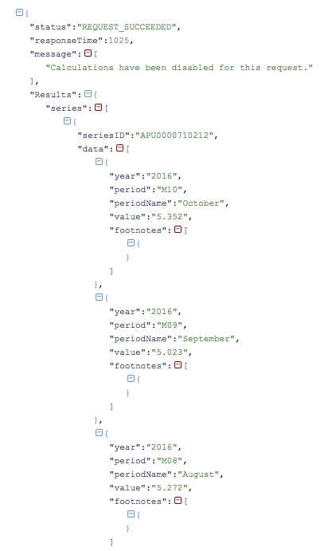

The JSON strcuture for series id APU0000710212 (Chedder cheese, natural(cost/lb)) is shown below:
I took the results from my data ouput from the previous page and pasted it in http://json.parser.online.fr/ to better visualize the data.
My birthday is in October and say I want to pig out every october with ice cream and cheeder cheese. I want to be able to see easily see the prices in October for these two ideas for the past 6 years. First, let's start out with baby step and just look at for Cheese in Oct 2016.
We will have to tweak the handlePost function.
function handlePost(err, response, body){
if(!err && response.statusCode < 400){
//parse the JSON string and save it to a variable
var info = JSON.parse(body);
// Create a loop to iterate through each of the series in the JSON object
for (var i in info.Results.series)
{
// Log the catalog title for each series
if (i == 0) console.log ("Oct Average US city price - Chedder Cheese per lb ")
else console.log ("Oct Averge US city price - Ice Cream per 1/2 gal.")
// For each year, log the year and the value for that year
for (var j in info.Results.series[i].data)
{
//M10 represents the month of October
if (info.Results.series[i].data[j].period == "M10")
{
var year = info.Results.series[i].data[j].year;
var value = info.Results.series[i].data[j].value;
console.log(" " + year + ": " + value);
}
}
}
context.bls = body;
res.render('post', context);
} else {
console.log(err);
console.log(response.statusCode);
}
}
The code above is doing the following:
infoinfo.Results.series[j].data I ensure that the data period is M10, the October price, before storing the year and value in variableHopefully this tutorial has helped you understand how to pull data via node.js!